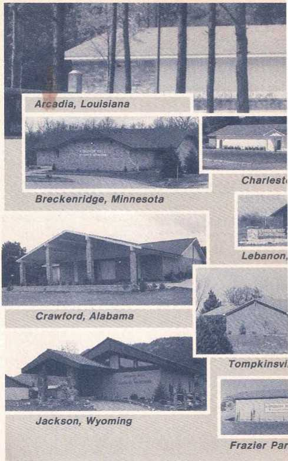

DECEMBER 1988
Vol. 31. No. 12 FOR UNITED STATES OF AMERICA
Meetings for Field Service
DECEMBER 5-11
How do you plan to
1. Introduce new Topic for Conversation?
2. Involve householder in discussion?
3. Lay groundwork for return visits?
DECEMBER 12-18
When offering Live Forever book
1. What do you feature?
2. What questions will arouse interest?
3. How do you make transition to "Look!" brochure?
DECEMBER 19-25
How will you offer Bible Stories book
1. To a young person?
2. To a parent or an older person?
3. As a means to improve family life?
DECEMBER 26-JANUARY 1
During holidays, how will you
1. Respond to greetings?
2. Show consideration for householders?
3. Stress the Kingdom?
TOPIC FOR CONVERSATION
Blessings of God’s Kingdom. (See Reasoning, pages 230-1.) 2 Pet. 3:13—Promise of righteous conditions.
Rev. 21:4—Death and pain to be no more.
United in Doing Jehovah’s Will
1 In some areas the weather during December can be cold or rainy. There may betimes when having a share in the Kingdom service is difficult, and it may take more determination on our part to get into the field service. There may also be occasions when we cannot spend as much time out-ofdoors because of unfavorable weather conditions. Nevertheless, with good planning and diligent effort, we can continue to sound forth the Kingdom good news.
2 For many people December is a holiday month. Their minds turn to celebrations, the buying and preparing of gifts, visiting relatives, and seasonal social activity. Since much of the celebration is supposedly in honor of Christ, it may be good to highlight matters pertaining to Christ in our preaching work. Informal witnessing also offers the opportunity to discuss the real purpose of Jesus’ birth, focusing on the teachings of the Scriptures regarding God’s Son as our Redeemer. The door-to-door ministry and return visits can stress the real significance of Jesus in the lives of Christians.
THE OFFER
3 We will be offering My Book of Bible Stories or You Can Live Forever in Paradise on Earth for a contribution of $3.00 each or the small-size edition of the Live Forever book for
“This Is the Way”
1 Isaiah 30:21 states: “Your own ears will hear a word behind you saying: ‘This is the way. Walk in it, you people.’” That “word behind you” is the voice of Jehovah speaking through his Word and organization. Are you giving heed to that “word,” and are you helping others to respond to it?—Jas. 4:17.
2 Those with whom we study need to appreciate that Jehovah has an organization. We must help them to view the organization in harmony with the fulfillment of prophecy and become motivated to cooperate with it. (Acts, chapter 2; compare Romans 12:5.) What can we do to emphasize the role of the organization in their lives?
MAKE GOOD USE OF BROCHURE
3 The brochure Jehovah’s Witnesses— Unitedly. Doing God’s Will Worldwide can be very useful in directing Bible students to Jehovah’s organization. It makes effective use of the Scriptures, pictures, and review questions. It is very beneficial to spend ten minutes or so during or at the close of each study period to dis$1.50. Both publications provide many avenues of approach with the Kingdom good news. Part 6 of the Bible Stories book, beginning with story 84, covers the period from the birth of Jesus to his death. Here we have a wealth of information on various topics dealing with Jesus’ birth. There are the stories entitled “An Angel Visits Mary,” “Jesus Born in a Stable,” and “Men Guided by a Star.” As you can readily appreciate, in these three stories alone, you have many points that can be used in talking with those you meet in the field during the Christmas holidays. This would be particularly true where there are children in the family.
4 Chapter 6, beginning on page 57 of the Live Forever book, is entitled “Jesus Christ—Sent by God?" This provides many talking points concerning Jesus’ prehuman existence, his life on earth, and the reason for his coming, including his current role as Ruler of God’s Kingdom. In view of the fact that the birth of Jesus is in the minds of many people at this particular time of the year, you can see the benefit of directing attention to the Live Forever book to heighten their interest in accurate information about our Lord.
5 If the book offer is not accepted, you may offer the “Look!” brochure. Here, too, it is possible to highlight (Continued on page 2, col. 1) cuss information from the brochure.
4 The student should be encouraged to review the article or the portion that can be covered during the allotted time. Perhaps you will want to limit your discussion to one or two questions. For example, when discussing “Jehovah Gathers and Equips His People for Work,” you could spend the entire time on the third question on page 11. Using the scriptures cited while reviewing the points made on pages 8 and 9 can help the student understand Jehovah’s direction.
5 Make good use of the pictures in “Congregations for Building Up in Love and Unity,” beginning on page 12. Why not make a point of using these to show the basic responsibilities of the elders? Such emphasis will make it easier for the student to learn to go to the elders when experiencing problems.
6 When reviewing the meetings, consider only one each week. This can be done when you are about to discuss the answer to question 2 in
(Continued on page 2, col. 2)
Meetings to Help Us Make Disciples
)4
' WEEK STARTING DECEMBER 5
* Song 8
< 8 min: Local announcements and Theocratic News. Include comments on December magazines dealing with holiday celebrations. Remind brothers of magazine activity for second Saturday of the month.
20 min: “Manifesting Faith by Fine Works.” Question-and-answer coverage of paragraphs 1-12.
17 min: “United in Doing Jehovah’s Will.” Discussion between elder and. ministerial servant. Demonstrate offer as mentioned in paragraphs 3 and 4, one presentation from house to house, the other in informal witnessing.
Song 224 and concluding prayer.
r WEEK STARTING DECEMBER 12 ^•Song 65
12 min: Local announcements. Include accounts report along with Society acknowledgment of contributions made by congregation. Comment briefly on “Prepare Well for Congregation Book Study.”
15 min: “Manifesting Faith by Fine Works.” Question-and-answer coverage of paragraphs 13-21.
18 min: “The Theocratic Ministry School Brings Benefits." Talk by school overseer, stressing benefits and pointing out adjustments for
United (Cont’d)
the role Jesus plays in providing our ransom from sin and death. In particular you can refer to pages 18 and 19 to highlight this subject.
6 With many young publishers having a holiday period during December, they too can have a full share in the all-important Kingdom work along with their family and others in the congregation. Some may be able to auxiliary pioneer. The body of elders should schedule meetings for field service to meet the needs of the congregation.
7 Even though December’s weather may prove inclement at times, all should strive to have a meaningful share in unitedly doing Jehovah’s will. One of the best ways to stimulate interest in the Kingdom message is to tie it in with something that is currently on the minds of people. December offers us a fine opportunity to do just that, since in many cases people will be thinking about the religious holidays. coming year. Mention total enrolled, and encourage those who have not yet enrolled to do so.
Song 118 and concluding prayer.
WEEK STARTING DECEMBER 19
Song 162
10 min: Local announcements and appropriate Announcements from Our Kingdom Ministry. Encourage sharing in magazine work on fourth Saturday. Outline arrangements for holiday witnessing. Briefly demonstrate one or two appropriate introductions. ••.
15 min: “Pay Constant Attention to Your Teaching.” Consider practical points from article in July 15, 1988, issue of The Watchtower. Stress using Reasoning book to improve introductions, as mentioned on pages 16 and 17 of article.
20 min: “This Is the Way.” Questions and answers. Include one or two brief demonstrations to show how to direct interest to the organization by using Doing God’s Will brochure.
Song 42 and concluding prayer. ^WEEK STARTING DECEMBER 26
Song 26
12 min: Local announcements. Outline arrangements for witnessing on the holiday weekend. Demonstrate
The Way (Cont’d}
the article “Meetings for Inciting to Love and Fine Works.” Show the student how you prepare for the Congregation Book Study.
KEEP IT SIMPLE
7 There are many other topics in Doing God’s Will that can be developed as the need arises. As one brother put it: “The thing for which to strive is simplicity. Just a couple of scripture texts, a brief discussion touching on the need for being present at meetings, and would you believe it?—it works!” Another brother stated: “In my opening and closing prayers, I always refer to Jehovah’s organization.”
8 The Doing God’s Will brochure can provide direction and help to keep your Bible study alive, moving, and progressive. Remember to consider points from the brochure on a regular basis. Let us then take the lead in directing attentive students to Jehovah’s organization and join with Jehovah in saying, “This is the way.” offer for the month of January, using introduction from Reasoning book. Suggest other introductions that could be used with offer.
18 min: “Presenting the Good News < —In Territory Frequently Worked.” Questions and answers. Adjust according to local needs. Emphasize need to work territory thoroughly and to call back on all placements.
15 min: Local needs or talk on “Remember Christian Principles” from The Watchtower of October 1, 1988, pages 26-9.
Song 206 and concluding prayer.
Some lessons scheduled in the Creation book are short. When preparing for the Congregation Book Study, it may be helpful to look up related material published in recent years in The Watchtower and Awake!
Information that can be found through use of the Index should stimulate discussion of points mentioned briefly in the Creation book. For example, relevant material that may be considered during December can be found by checking references listed under “Creation,” “Evolution,” “Earth,” “Seasons," “Water,” “Atmosphere," “Trees,” and so forth.
With a little research, study conductors in particular can be better prepared to stimulate discussion when time allows. Answers should be clear and to the point.
Schedule for congregation studies in the book Life—How Did It Get Here? By Evolution or by Creation?:
December 5: Pages 128 to 138*
December 12: Pages 138’ to 146’ December 19: Pages 146* to 151 December 26: Pages 152 to 159
• To or from subheading.
SEPTEMBER SERVICE REPORT
Pubs. Hrs. Mag's. R.V. Bi.St.
Aux. Pios. 37,192 59.8 28.5 16.2
TOTAL 785,141
Newly Dedicated Ones Baptized: 2,334
We rejoice to see a new peak of 61,591 regular pioneers reporting in September, a 6-percent increase over the same month one year ago.
© 1988 Watch Tower Bible and Tract Society of Pennsylvania. All rights reserved. Our Kingdom Ministry (USPS 295-360) is published monthly by Watchtower Bible and Tract Society of New York, Inc., and International Bible Students Association, 25 Columbia Heights, Brooklyn, N.Y. 11201. Second-class postage paid at Brooklyn, N.Y., and at additional mailing offices. POSTMASTER: Send address changes to Watchtower, 25 Columbia Heights, Brooklyn, N.Y. 11201. Printed in U.S.A.
1 Fine works are an evidence of faith that is alive. For example, faith motivates Christians to act compassionately toward those in need. (Jas. 2:14-17, 26) Such faith has become outstandingly manifest in the support being given to the current Kingdom Hall building program. and the Society Kingdom Hall Fund. Although faced with increased pressures of daily living, along with escalating construction costs, Jehovah’s Witnesses in all parts of the earth have proved to be “a people . . . zealous for fine works” by volunteering labor and providing funds to meet the need for additional and improved Kingdom Hall facilities. (Titus 2:14) As “the desirable things of all the nations” continue to stream to Jehovah’s organization, we have the privilege of continuing to manifest our faith by our works in their behalf.—Hag. 2:7.
2 Regular contributions to the Society Kingdom Hall Fund have assisted congregations having a pressing need with their Kingdom Hall construction projects. As loans are re.-paid, these funds are, in turn, used to help other congregations. Funds have now been made available to assist in the construction of 571 new Kingdom Halls, accommodating 849 congregations. But the number of congregations in the United Stat^snas increased bv 920 during the five years that the Society Kingdom Hall Fund has been operating! Thus, there is still a pressing need for additional Kingdom Halls.
SPEEDING UP THE WORK
3 In recent years a tremendous work has been accomplished in constructing quickly built Kingdom Halls. Regional Building Committees have assisted many congregations with their new"Kingdom Hall construction and major remodeling projects. The 63 Re-, gional Building Committees reported that 335_ projects involving construction of new Kingdom Hall^prjrenovation of existing buildings were completed last year. Many of the new Kingdom Hall building projects were financed entirely or in part by the Society Kingdom Hall Fund.
4 The guidelines that the Society has provided for the Regional Building Committees have helped to simplify and speed up building procedures, while enhancing safety. The appointed committees now schedule skilled craftsmen to be at the construction site only during the time that their sKUlsare actually needed. This limits the number of workers on the site at any one time and allows them to spend more time with their families and congregations. One Regional Building Committee reported :(^By following the Society’s guidelines . . . , we were able to schedule closely each trade as it was needed. We have experienced a very noticeable increase in nffioionoy, safety, and quality of work. . . . [The workers] came and went as scheduled. This was appreciated. by thp workers that came from distant places, being there only when needed and then returning home to family and congregation. This has helped to reduce congestion and food costs and has increased safety.” Another commented: “Each department was on the job only as needed . . . 140 to 180 workers was the peak at any one time. Having no young children on the job was an improvement, making it safer and easier to accomplish work.”
5 The fine quality of the work, has been observed by others. When onejjuilding com-mitteewas having difficulty in getting cooper^ ation from local officials, the chief building inspector from a nearby city, who had worked with Kingdom Hall construction in his area, providec^a letter of recommendation. In part, he~sffid:(“I would be more than happy to dis-cu'ss~tEe way we have handled the two projects in our area. . . . The entire project was well coordinated, supervised, and the work doneby craftsmen, not just workers. . . . When things are coordinated so well, you can just about tell to the hour when inspections will be needed. . . . Quite a feat! Mr. Building
Official, don’t worry—‘quick-build’ will do you proud!”
WILLING VOLUNTEERS
6 Along with experienced elders serving on Regional Building Committees, volunteers representing_66 different trades are used during the year to assist congregations with their Kingdom Hall projects. This too is a fine expression of brotherly love, as this work takes them away from their congregations and families.—Rom. 12:10; Heb. 13:1.
7 PgahxullO :3- says to the enthroned Jesus: (“Your people will offer themselves willingly on the day of your military force,” ^nd this is true not only in the preaching and disciplemaking work but also in construction projects. Of course, in all of this, we look to Jehovah-to-bjess the arrangement. As P^alrn 12ZLLksaysv‘Unless Jehovah himself builds the house, it is to no avail that its builders have worked hard on it.” )
CONGREGATIONS CAN ASSIST
8 There is much that each congregation can do to support the Kingdom Hall construction program. For instance, congregations contemplating undertaking new construction projects can select a simple design that will neither be costly nor require intensive labor. (Compare Philippians 1:10.) The Society has available a variety of Kingdom Hall plans that are compatible with the method of construction used for quickly built halls. (Please note the December 1986 Our Kingdom Ministry insert, paragraphs 10-12.) While we look forward to Jehovah’s blessing upon our congregations, we must also be practical in our building design so as to meet the need, without placing an unnecessary burden on either the friends or the resources of the Society Kingdom Hall Fund.
9 Some congregations have included in their Kingdom Hall design a modest apartment that can be used by a traveling overseer while serving in the area. In the future, congregations building Kingdom Halls that will be centrally located in the circuit may want to consider whether it would be practical to include a room where the circuit overseer and his wife can be accommodated.
10 When undertaking a Kingdom Hall building project, the need for local financial sup
port can be discussed frankly with the congregation^) involved. The more finances the brothers provide locally with both contributions and loans, the less they will need to borrow. This allows more of the resources of the Kingdom Hall Fund to be available for other congregations to use in building their Kingdom Halls.
11 Some congregations, after requesting assistance from the Society Kingdom Hall Fund and being advised that they would have to wait because moneys were not available at the time, have then found sufficient loans and contributions available locally tn mmpiato their project. It is good to check thoroughly the availability of such funds before requesting help. (Luke 14:28-30) Surveys indicate there are at present over 470 Kingdom Hall
construction projects in need of financial-assistance! And when we consider the cost of a new Kingdom Hall, this represents a considerable amount of money that will be needed to complete these projects. Phifinpians 2:4 reminds us:\Keep an eye, not in personal interest upon just your own matters, but also in personal interest upon those of the others.’,)
12 Many congregations and circuits have assisted regularly by passing resolutions authorizing that funds be contributed tn tbp s^ripiy Kingdom Hall Fund. This is commendable and appreciated. Even though a congregation follows this procedure, a Society Kingdom Hall Fund contribution box conveniently located in the Kingdom Hall will enable individuals desiring to do so to make voluntary contributions to the fund. Any moneys placed in this contribution box should be forwarded to the Society in addition to those covered by the congregation’s resolution. Individuals may also make direct contributions to the fund, sending their remittances to the Society with an accompanying letter specifying the purpose of the contribution.
THE PRESENT NEED
13 There are various reasons why some congregations are eager to build new Kingdom Halls. Although some early Kingdom Halls may have been built initially in fine neighborhoods and at the time were of sufficient size to care for the needs of the congregations, circumstances have changed, and we have experienced wonderful growth. Some congregations have simply outgrown their present hall. The meetings are overcrowded, and at times the attendance may exceed legal limits. Usually these halls also have insufficient parking space.
14 Many congregations still meet in rented buildings, such as community centers. The meeting schedule is subject to change, or use of the facility may be cancelled at the discretion of the management. This may occur because of conflicting schedules, civic events, and so forth. In these instances, all the equipment and seating is makeshift, requiring setting up for each meeting and dismantling afterward. Sometimes these places are decorated inside and outside according to the worldly holiday season. Often rented facilities are in downtown areas where parking is limited. This has caused difficulties and tense situations with neighbors. Also, the community may view the congregation as lacking permanency, and this hinders growth. Some of these facilities are upstairs, making access difficult, and at times dangerous, for older or infirm persons.
15 Some Kingdom Halls are located far from any population center. Attending meetings requires extra travel time and expense for the publishers and interested ones. Such halls may be difficult for new ones to find, and this limits growth in the area. Some have been built in low-lying areas that flood periodically. On the other hand, Kingdom Halls built in metropolitan areas a number of years ago may now be in neighborhoods that have deteriorated. At times in such neighborhoods,
vandalism is directed at the Kingdom Hall and at the brothers’ automobiles. Neighbors have threatened the brothers and sisters. All of this does not make for a pleasant atmosphere.
EXCELLENT RESULTS
16 Following the construction of a doubleauditorium Kingdom Hall, a congregation in New York State reported: “One member of the local community block club group that was extremely opposed to our building the Kingdom Hall came by after the project was up. She apologized for being negative about the Kingdom Hall and said that it was the most amazing thing she had ever seen in her life. She said that the peace and unity displayed on this building project could only come about because of our having the Lord’s backing, adding, ‘Don’t be surprised to see me at your meeting.’ Other members of that same block club came by with movie cameras to take pictures, and they invited us to their meeting as their guests to welcome us to the community and for us to talk about our beliefs. People in the city as a whole are much more willing to talk to us at their doors, and they view us in a much more favorable light. .. . The experiences are unlimited.”
17 A congregation in Kentucky that had previously met in a remodeled older home wrote regarding the construction of their new Kingdom Hall: “Our experience in the community was very favorable, with many comments regarding ‘what can be accomplished with true unity and cooperation.’ We also received a lot of help from local businesses in the loan of various things, such as front-end loaders, telephone service for the building weekend, Saturday service from building supply houses, and very reasonable food prices. The list goes on and on. Our plumbing supplier, located over 50 miles away, was so interested that he gave us his home phone number and offered to bring any needed supplies on Saturday or Sunday at his expense, saying he really wanted an excuse to come and see such a project.”
18 The building project generally encourages the publishers, in addition to making a long-lasting impression on the community. One body of elders in West Virginia reported: “We have experienced great joy in our new hall. The local friends have really taken pride in it and are much more diligent in taking their turn in maintaining it. We have also noticed that our meeting attendance has improved. The community has really responded also. While for most their interest in the truth is still reserved, they have commented very favorably on what was accomplished and still do, even though a year has passed. Jejiovah’s name has certainly gained a greater respectability, and our preaching work too has gained more respect. The new hall seems to have given us a better foothold in the territory than we experienced before.”
EXPRESSIONS OF APPRECIATION
19 Congregations have written expressions of appreciation for the Society Kingdom Hall Fund. Representative of these are the sentiments expressed by a congregation in Indiana: “It was a wonderful experience for all of us here. . . . We also want to thank the Society for the material assistance provided by the building fund. Having this assistance allowed us to build a Kingdom Hall large enough to accommodate our growing needs.”
20 One congregation in Alabama had met in a mobile home under cramped conditions for three years. After completing the construction of a new Kingdom Hall with assistance from the Society Kingdom Hall Fund, they wrote: “From the fullness of our hearts, we thank you. People in our territory are absolutely amazed at what Jehovah’s Witnesses are doing. The wonderful thing about it is they are talking about Jehovah. Some are coming to our meetings, others come by just to see the Kingdom Hall. We have started some very fine Bible studies, and one is headed for baptism.”
21 As we look to the future, we pray for Jehovah’s continued blessing on the Kingdom Hall construction program. By our wholehearted support, we can show our appreciation for the Kingdom Hall and its role in helping us to encourage one another and “incite to love and fine works.” (Heb. 10:24, 25) This involves faithfully caring for our own Kingdom Hall and assisting others with contributions, volunteer labor, and other needed support as we are able. In this regard let us all be determined not to “give up in doing what is fine, for in due season we shall reap if we do not tire out.”—Gal. 6:9.
• Literature offer for December: My Book of Bible Stories or You Can Live Forever in Paradise on Earth for a contribution of $3.00. Small-size Live Forever book is $1.50. The brochure “Look! I Am Making AU Things New" may be offered for a contribution of 30<t when regular offer is not accepted. January and February: Any 192-page book published before 1980 and printed on groundwood (newsprint) paper that the congregation now has in stock, for a contribution of 50e. Books printed on better-grade (free-sheet) paper are not to be used in this offer. Choosing, Commentary on James, and Word of God, although printed on better-grade paper, may also be offered for 50c during these two months. Congregations that do not have these older books may offer any other 192-page book available locally for a contribution of $1.00 each. March: Revelation—Its Grand Climax at Hand! for a contribution of $3.00.
• Congregations should begin ordering bound volumes of The Watchtower and Awake! for 1988 on their December literature orders. (See the 1988 Cost List, paragraphs 7-10.) The bound volumes will be available in Dutch, English, French, German, Greek, Italian, Japanese, Portuguese, and Spanish. Until the bound volumes are available and shipments are made, these will appear as “Back Ordered” on congregation invoices. Bound volumes are controlled stock items and will be charged at $6.00 each for congregation, public, and pioneers. (See the Cost List, paragraphs 23-25.)
• Shipment of the reprinted Watchtower bound volumes for 1960 through 1964 has begun, and the Society will now accept orders for the years 1965 through 1969. Congregations and individuals desiring to have these volumes for their library should determine the total number of volumes they need for each year and submit their requests through the congregation. The total quantities should be entered on the Literature Order form (S-14) and SUBMITTED DURING THE MONTH OF DECEMBER 1988. (See the Cost List, paragraphs 7-10.) Printing of the 1965 through 1969 bound volumes, for the English Watchtower only, will commence in early 1989. Please do not place orders for years other than 1965 through 1969 until future direction appears in Our Kingdom Ministry. Since the Society will not stock these reprinted volumes, we urge all to consider the matter carefully and place orders for the 1965 through 1969 volumes that are needed. Later orders will only be filled as long as existing supplies last. These reprinted volumes are controlled stock items and are to be paid for upon receipt. The price will be $6.00 each.
• The presiding overseer or someone designated by him should audit the congregation’s accounts on December 1 or as soon as possible thereafter.
(.Continued on page 8, col. 2)
The Theocratic Ministry School Brings Benefits
1 Since 1943 the Theocratic Ministry School has proved to be a real blessing to those who have taken advantage of its fine provisions. Yes, the Theocratic Ministry School continues to accomplish its two main objectives: (1) to improve our ability to speak Bible truth and (2) to make us more familiar with God’s Word, its doctrines, and its principles. Many have expressed deep appreciation for the benefits received from the progressive training of the Theocratic Ministry School. Both brothers and sisters have been helped to ‘handle the word of truth aright.’—2 Tim. 2:15.
MAKING ADVANCEMENT
2 Those who are newly enrolled as well as those who have been in the school for many years can gain the greatest benefit by carefully preparing their assignments. It has been observed that some read their presentation. To become more proficient in giving a witness requires both good reading and the ability to express oneself extemporaneously.
3 The Reasoning book has proved to be a fine asset in our work, and the Theocratic Ministry School is an excellent forum through which we have become better acquainted with its many features. Becoming more familiar with this publication will enable us to express ideas in our own words and to be more conversational. During 1989 we will continue to benefit from a progressive consideration of the Reasoning book by means of the student talks based on material in that publication.
INSTRUCTIONS FOR 1989
4 During the coming year, Assignment No. 1 will still be based on “All Scripture Is Inspired of God and Beneficial.” Although 15 minutes will be allotted, a slight adjustment is being made. From 10 to 12 minutes may be used for the talk and from 3 to 5 minutes for the oral review.
5 Highlights from the Bible reading will continue to be one of the most important parts of the Theocratic Ministry School. Brothers who handle this assignment should help the audience understand why and how the information is of value to us. Using the Scripture index in the Watch Tower Publications Index can be of much assistance. Additionally, special articles on books of the Hebrew Scriptures will continue to appear in The Watchtower, and these will provide background material and other practical points that can be used. If the weekly presentation of Bible highlights is not properly cared for, the school overseer will give private counsel.
WRITTEN REVIEWS
6 Beginning in 1989, a change will be made in the way in which written reviews are handled. Reviews will be held three times during the year —at the end of April, August, and December. The Society will no longer provide a printed review sheet, but each publisher should bring his own paper and pen so he may participate. As in the past, prepared questions with their answers will be provided by the Society. In the written reviews, particular attention will be given to material covered in Assignment No. 1 and Bible highlights.
BIBLE READING
7 Are we personally benefiting from the assigned Bible reading? As we read, let us look for scriptures that build appreciation, that strengthen qualities needed in our personal and family life, or that help us apply the examples in the narratives. Have we tried doing our weekly Bible reading while listening to the Society’s Bible tapes? By thus utilizing the senses of seeing and hearing we can greatly enhance our grasp of the material. Let us not overlook the excellent help these tapes provide for brothers assigned to prepare Talk No. 2. By paying attention to proper pronunciation, voice inflection, sense stress, and modulation, these can make their reading more lively and meaningful.
8 Jehovah has made abundant spiritual provision to assist us in our vital preaching work. At Psalm 19: 14, David expressed his prayerful desire: “Let the sayings of my mouth and the meditation of my heart become pleasurable before you, O Jehovah my Rock and my Redeemer.” If, as in David’s case, love for Jehovah and his Son wells up in our heart, the Theocratic Ministry School can help us make the sayings of our mouth more pleasurable to Jehovah during 1989. Let us determine now to benefit fully from this loving provision of our kind heavenly Father.
IPRESENTING THE GOOD NEWS \__>
In Territory Frequently Worked
1 How often are you working your territory? If the territory is covered often, you are especially blessed. Why? Because congregations that work their territory frequently usually experience rapid growth. This has been the experience of congregations in many large cities. For example, in New York City, where most territory is worked regularly, there are now more than 340 congregations.
2 When working a territory that was being covered weekly, one brother met a woman who said she had never been contacted before. She eagerly took literature and was glad someone found her. So there are still people in such territory who have not had the opportunity to hear the good news. (Compare 2 Pe--ter 3:9b.) Thorough coverage of frequently worked territory is important in order to search out sheeplike people.—Matt. 10:11.
MEETING THE CHALLENGE
3 Where territory is worked frequently, it is vital to keep an accurate house-to-house record. Lists of not-at-homes can be used to keep groups busy in the field when other territory is not available. Why not use evening witnessing periods to try to reach those not found at home earlier in the day? Remember, those away during the day and on weekends are often relaxing at home in the evenings.
4 If you cover your territory several times while using one Topic for Conversation, it is beneficial to vary your introduction. You can find appropriate introductions on pages 9-15 in the Reasoning book. Use these to help start conversations with those you meet.—Prov. 1:5.
5 Another way to vary your introduction is to offer a tract. Tie the subject of the tract in with the Topic for Conversation. Also, make use of current news events. Asking questions about such things may provide a basis for a fine discussion.
WITNESS TO ALL
6 Do you spend about 50 percent of your service time making return visits and conducting Bible studies? If you keep a separate house-to-house record of those who show interest, you will be able to give your record of not-at-homes to the one holding the territory. Be sure to call back promptly on all who accept literature as well as on any others who show interest.
7 We will be able to reach even more people with the good news if we are alert to all our opportunities to give a witness. For example, while working our territory, we often see people leaving homes or apartments. Wherever possible and appropriate, why not briefly offer the magazines or a tract?
8 Even where territory is worked each week, keep in mind that very likely there are honesthearted ones who have not yet been found even though we have made repeated efforts to contact them. And though you have witnessed at the same door previously, you may meet a different person this time. Therefore, like the apostles, let us witness thoroughly in our assigned territory. —Acts 8:14, 25; 20:20, 21.
Announcements (Cont’d)
• Many brothers desire to have a tour of the Jersey City Assembly Hall when they visit the Society’s headquarters in Brooklyn. The Assembly Hall will be open for tours Monday through Friday from 9:00 a.m. to 5:00 p.m. Tours are not conducted after 5:00 p.m. or on weekends.
• Beginning in January 1989, the Awake! will be published monthly in the Arabic language. The subscription rate for this monthly magazine will be $2.50. • New Publications Available:
New World Translation of the Holy Scriptures—With References (Rbi8)
—Dutch
New World Translation of the Holy Scriptures (Deluxe pocket edition; DLbiZ5}, available in black or maroon —Italian
Comprehensive Concordance
—Danish
Life—How Did It Get Here? By Evolution or by Creation? —Thai
Organized to Accomplish Our Ministry
—Dutch, Finnish Revelation—Its Grand Climax at Hand! —Danish, Dutch, Finnish,
German, Japanese, Korean, Norwegian, Portuguese, Swedish You Can Live Forever in Paradise on Earth —Burmese
Enjoy Life on Earth Forever!
—Bassa (Liberia), Kekchi “Look! I Am Making All Things New” (Brochure) —Hungarian, Kuna,
Maltese, Turkish The Government That Will Bring Paradise —Kinyarwanda
• New Cassette Recordings Available: Jeremiah, Lamentations (set of five;
♦ District conventions in Bahamas were attended by 2,212, and 40 were baptized. Their publisher peak was 974.
♦ Bolivia continues to report fine growth, reaching a new peak of 5,823 publishers in July. This represents a 17-percent increase over last year's average.
♦ Burkina Faso reached a new peak of 388 publishers in July.
♦ An all-time peak of 11,366 publishers was reported by Costa Rica during July. A new peak of 15,265 Bible studies was reached.
♦ Ghana had a new peak of 34,284 publishers for July, a 12.7-percent increase over last year’s average. Their July figure of 56,650 Bible studies is also the peak for this year.
♦ Guadeloupe, with a peak of 5,565 publishers, had 12,488 in attendance at their district conventions, and 266 were baptized.
congregation and public: $7.50; pio
neers: $6.25) —Japanese
• A revised version of Kingdom Melodies No. 1 will be available on January 1, 1989. This cassette includes only songs from the 1984 songbook and was rerecorded by the Society’s orchestra using newer recording methods to make the music more enjoyable. Eventually this will also be the case with Kingdom Melodies Nos. 2 and 3. However, do not order these at this time, as announcements will be made when cassettes become available.
Kingdom Melodies No. 1 (congregation and public: $2.00; pioneers: $1.75)
• A convenient, empty eight-cassette storage album is now available for preserving your Kingdom Melodies cassettes.
Kingdom Melodies Album (without cassettes) (congregation and public: $5.00; pioneers: $4.00)
• The following publications are now available in grade-two English Braille:
New World Translation of the Holy Scriptures (Hebrew Scriptures, 14 volumes; Greek Scriptures, 4 volumes) in vinyl binders. Complete set of 18 volumes for $144.00, or $8.00 per volume
Revelation—Its Grand Climax at Hand! (four volumes in vinyl binders: $32.00)
Examining the Scriptures Daily—1989 (four volumes: $5.00)
Theocratic Ministry School Schedule for 7989 (free upon request)
To obtain Braille publications, send a separate order to the Society’s BRAILLE DESK, giving the name and address of the person who will use them. Include remittance for purchase. Do not include with congregation orders for printed literature.
8